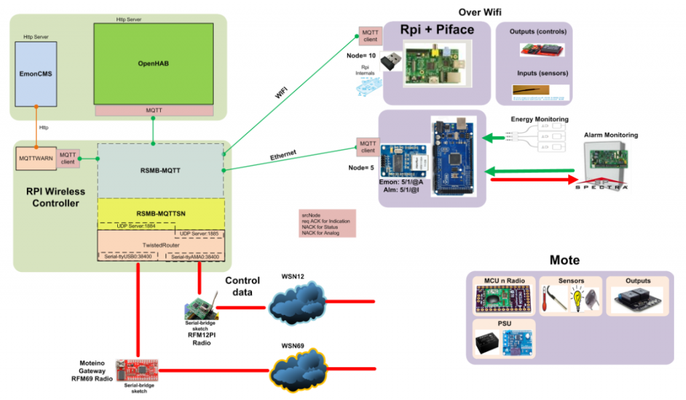

Question: how do I display MQTT data in EmonCMS? Can I test this on emoncms.org or only if I locally host and install the mqtt module? Is there any further information on MQTT + EmonCMS which I have missed?
Background: I'm starting out building a energy monitor with Arduino -> MQTT -> EmonCMS. I'd like to use EmonCMS to subscribe to a MQTT feed and display the data. It's very similiar to OEM, tailored to my needs.
Progress so far: I've succesfully displayed simple JSON/HTTP data on my emoncms.org account. I can't find any 'subscribe to MQTT' input. I've looked at https://github.com/elyobelyob/mqtt repos but can't find usage / getting started section.
Thanks, Brett.
Re: EMonCMS and MQTT
Hello Brett, best bet is to ask Nick Boyle (elyob) who wrote the MQTT module. I think its tailored for talking to a current cost device at the moment.
I have been playing about a bit with MQTT recently and agree that it would be great to make fully integrated use of it in emoncms.
Re: EMonCMS and MQTT
The only way I am aware of is to write a small app to subscribe to the topic(s) you want, process the feed and submit to EmonCMS via a JSON query ...
At least that is the way I have done it and been running for over 6 months with no problems (aside from me playing with other parts of the system!) ...
Have a look at http://www.harwoodfamily.id.au/index.php/environmental-monitoring/emoncms ... it is pulling information from up to 7 very different types of sensors including current cost, custom open energy monitor (3 phase), gas usage (currently offline due to me working on PoE Arduino components), pool monitoring system - all via MQTT with no direct device to EmonCMS communication.
I am also close to finishing rewriting all my components, aside from devices running Arduino, in C#.Net and using Mono/Xamarin - including some web servers not currently published, Android code (MyCB), and a number of other bits. All previous stuff was in perl, but I couldnt get a reliable code base working with the required multi task and error handling.
Re: EMonCMS and MQTT
Thanks guys.
I checked the MQTT module and it appears to do just that: converts from MQTT (from device) to JSON (to server). As you mentioned is it hardcoded to a specific device. It could be extended and adapted. Seems like you have done a very similar thing, Mal.
I could go this route (ie. write/adapt emonCMS to use MQTT -> JSON), but it seems like re-inventing the wheel (?).
OpenHAB appears to support MQTT already. I see that EMonCMS is perhaps more specific (to energy monitoring), PHP instead of Java. I'm considering using your hardware and arduino side, adapting some of it to MQTT and then using OpenHAB to view (instead of EmonCMS).
Trystan (or others), can you comment on OpenHAB vs EmonCMS for this kind of application?
(Ps Great site, Mal!)
Re: EMonCMS and MQTT
Brett, I just had a look at OpenHAB .. looks like it might be worth installing and having a play with ...
OpenCMS is quite different to OpenHAB .. OpenCMS is really only for capturing and displaying information (as far as I know) ... there is little functionality to control things (although there are some plug-ins starting to move this way lately).
It really depends on what you want to do and achieve ... and since you are down the path of MQTT, you can have it all ;)
The OEM devices do not have standard ability to 'speak' MQTT .. depending on what you want to do with the devices, it is not particularly hard to add the MQTT library and get results ... although if you try to do too much, you start running out of resources in an Arduino and need to look at other ways of skinning that pesky cat :) If you fill out the enquiry form on my web site, Im sure I can find some of my original production code I can send you that did the basic energy monitoring and publishing to a MQTT broker .. probably around 10 months old, so probably some updated libraries and functions, but would get you started.
I had a look at the MQTT page on OpenHAB .. (https://github.com/openhab/openhab/wiki/MQTT-Binding) ... this is the sort of configuration my "MQTTtoEMONCMS" application takes, but in the form of an XML configuration file .. you can set the broker details and subscription topics as well as EmonCMS server details. It is probably a bit hard coded toward my MQTT naming convention at the moment, but could be generalised to suit ... As I mentioned above, it is written as a C# application and (unfortunately for some) requires Mono to run on *nix devices ... I have it runing on RaspPi's with no problems as well as a few other low end servers in my test environment (dont have it running on any Windows boxes!).
Re: EMonCMS and MQTT
I have several monitoring items in my house using mqtt. I've been playing with the mqtt module, but cannot seem to get it to work. I'm using a local instance of emoncms. Anyone been able to get this to work?
Re: EMonCMS and MQTT
Have you thought of using nodered? http://nodered.org
Theres an emoncms node and its simple to link it up to a MQTT input node.
Re: EMonCMS and MQTT
I'm also using node-red, and logging weather data to emoncms. Works great!
Paul
Re: EMonCMS and MQTT
Thanks! I'll have a look. I was hoping that I could do it with just the mqtt module, but if this works..
Re: EMonCMS and MQTT
Has there been any further developments to get a local emoncms [with the mqtt module] subscribing to mqtt messages and having the data as feed/input data into emoncms? I have a test local emoncms installed with the mqtt module, an rsmb server [broker for MQTT and MQTT-SN]. When I configure the mqtt module in emoncms Im expecting the emoncms mqtt module to subscribe on the configured topic to the broker.
This does not happen. There is also little/no documentation on this module.
Btw, I have hacked emontx units [that dramatic - its just other sketches with my mqttsn library and emon lib] that have mqttsn library installed so they publish mqtt-sn messages over RFM12B radio.
I use OpenHAB as my main mqtt client where I send my emon data over mqttsn. I have been doing the energy analytics in OpenHAB but its not designed for that. So I want to have emoncms subscribe to the mqtt feeds, do the analytics and then use the grpahic and dashboards inside openHAB for a one stop shop for home automation and energy monitoring. <rant off>
Thanks
Re: EMonCMS and MQTT
I have achieved this by using mqttwarn (Google for a link, sorry on my phone currently) which subscribes to the topic and transforms the payload into a HTTP POST with a JSON payload and sends to EmonCMS.
Works well and I will be happy to share my code once I return home from holidays if you are interested.
I would be keen to see your mqttsn library for Arduino if possible. I am using PubSubClient currently. I am also a heavy openHAB user so it seems like our use cases overlap quite a bit!
Re: EMonCMS and MQTT
Thanks Summerboy for the offer on the mqttwarn code share which I will take you up on. Nick Boyle has also emailed me a python script to do this, but mqttwarn is more configurable and better documented. It also seems very similar to Openhab [which makes me think that this can probably be done in Openhab as well using the mqtt and http binding and some rules].
Drop me an email, lets see how we can synergise our use cases....and not re-invent any wheels.
Ideally I think there should be a standard Internet of Things protocol/interface in and out of Emoncms, and in my opinion MQTT is it. And it would have been ideal if this was integrated into the same application as module so that I dont need to run another standalone script/application in my quest for home automation.
Sure no problem to seeing/getting the Mqttsn lib code. I havent uploaded the code to GIthub yet as I want to create a few more example sketches and document the readme.md and wiki quite nicely first.
https://github.com/jasonhector/Mqttsn-Mote-Library
Re: EMonCMS and MQTT
Yep - the reason it works so well with openHAB is that I helped write mqttwarn, with the specific thought of using it for openHAB notifications (which I am also heavily involved with). Since then I have been moving as much of my home automation logic/networking to MQTT as possible.
To configure mqttwarn to transform energy reports published to MQTT topics --> EmonCMS JSON packages I am using the HTTP target/service. As you can see it is pretty simple and assumes there is a simple float payload in the MQTT message. It is very easy to add more feeds/nodes.
This could be done using openHAB - with the MQTT/HTTP bindings as you mentioned - but I think this is cleaner since openHAB is completely out of the loop in this case. I do have the MQTT binding in openHAB configured to monitor the various feeds however and display values in my sitemap etc. I have yet to write any rules using them however (still early days).
MQTTWARN.INI
[config:http]
timeout = 5
targets = {
'emoncms' : [ 'get', 'http://<host>/emoncms/input/post.json', { 'node': '{node}', 'json': '{json}', 'apikey': '<apikey>' }, None ]
}
[emontx-grid]
topic = /emontx/grid
targets = http:emoncms
alldata = emontxgrid_to_emoncms()
[emontx-solar]
topic = /emontx/solar
targets = http:emoncms
alldata = emontxsolar_to_emoncms()
FUNCTIONS.PY
# EmonTX feeds
def emontxgrid_to_emoncms(topic, data, srv):
return to_emoncms(data, 2, 'grid')
def emontxsolar_to_emoncms(topic, data, srv):
return to_emoncms(data, 2, 'solar')
# custom function to format a data feed for posting to EmonCMS
def to_emoncms(data, node, name):
if type(data) == dict:
return { 'node' : node, 'json' : json.dumps({name : float(data['payload'])}) }
return None
Re: EMonCMS and MQTT
thanks Sumnerboy! Got it working. :)
Now I just need to get the dashboard/ graphs and/or "processes" emoncms data out of emoncms into openhab. Any ideas?
[This will allow me to do things like load curtailment - switching electircal appliances off when the load is high/ energy units running low]
Re: EMonCMS and MQTT
Not really sorry - my plan was to montior the raw MQTT feeds in openHAB as well and do 'processing' logic in the openHAB rules in order to get the necessary data for switching loads etc.
Keep us posted with how you get on - will be very interested to see how you get on.
I have suggested we use mqttwarn for EmonCMS notifications/events in another thread. By having a simple event/notify module in EmonCMS which just posts to an MQTT topic, then all the message delivery can be handled by mqttwarn and means the EmonCMS module can be pretty simple and not need continuous extending as different 'targets' are requested by users.
What do you think of mqttwarn?
Re: EMonCMS and MQTT
I really like tools that are simple to configure and give lots of flexibility [read interfaces] - and mqttwarn is exactly this.
I bring the habmin [web service addon to openhab] charts into my openhab sitemaps and display the charts there. So my idea is something similar for emoncms charts using openhabs webview.
I would be great to have mqttwarn as an emoncms module for both inputs, as well as outputs, ie. take any mysql data and map to mqtt messages to be published. I dont really know the event/notify mechanism in Emoncms, but Im guessing it binary state notifications on exceeding threashholds.
Would Mqttwarn be able to run queries against the emoncms mysql for "processed"/analytical data and pub that via mqtt?
Re: EMonCMS and MQTT
Not really - mqttwarn is designed soley to monitor MQTT topics and react to them. So it is very much MQTT <in> --> anything <out>. So in order to get mqttwarn to handle EmonCMS outputs we would need to have EmonCMS publishing to MQTT topics (as you mentioned).
But yes, mqttwarn is a fantastic little tool. The key is to get as much data using MQTT as possible - then you can do all sorts of notifications and transformations!
Re: EMonCMS and MQTT
If anyone is interested I have just added a new service/target to mqttwarn specifically for EmonCMS.
https://github.com/jpmens/mqttwarn/blob/master/README.md#emoncms
This should make it nice and easy for those using MQTT to get their feeds forwarded to an instance of EmonCMS. Just a matter of plugging in your server URL, apikey and the node and name for each feed.
Re: EMonCMS and MQTT
Thanks for this update to mqttwarn. Makes life just that little bit easier.... :)
Mqttwarn definately gets my vote for being the interface between mqtt and emoncms.
Re: EMonCMS and MQTT
Glad you are finding it so useful. And glad someone other than me is using the emoncms target ;).
Re: EMonCMS and MQTT
I just found this after I was about to post a question about MQTT and Emoncms.
I have a bunch of Arduino sensors that post data on a MQTT broker. I was thinking of having one of these Arduino sensors monitor current, and report the current usage using the emon Arduino library, and have it post this data via ethernet via MQTT, and use Emoncms to pick up this MQTT energy usage data.
Is that basically the setup that you have, @sumnerboy?
Re: EMonCMS and MQTT
I know the question wasnt directed at me, but my setup is exactly that. I have an arduino mega with enj Ethernet module. I run emonlib and nanodeMqtt libs, and all calVI from emonlib I put inside mqtt payloads and send to my RSMB MQTT broker. U ise mqttwarn that translates the mqtt into json for emoncms. this works really nicely.
I also use Openhab that also picks up the energy readings from the arduino mega.
I could share my sketch and mqttwarn config with you if you want?
Then also, I am busy extending the emoncms event module to include mqtt as an action so that any emoncms feed items can also be sent to a MQTT broker to be used elsewhere - in my case to Openhab again.
Are you familiar with MQTT-SN? I have managed to get MQTT-SN messages going over RFM12B radio to my MQTT broker [only RSMB broker can handle MQTT-SN currently]. so I use emontx V2 units and jeenodes that control my lights and plugs using MQTT-SN over RFM12B radios. I use RFM12PI with a custom sketch for the interface from the broker to the radio network
Below is my architecture:

Jason
Re: EMonCMS and MQTT
Could someone explain me how to use it mqttwarn and emoncms?
my config:
[defaults]
hostname = '192.168.1.6'
port = 1883
; name the service providers you will be using.
launch = file, log, emoncms
[config:file]
append_newline = True
targets = {
'mylog' : ['/tmp/mqtt.log']
}
[config:log]
targets = {
'info' : [ 'info' ]
}
[config:emoncms]
url = <http://192.168.1.7/emoncms>
apikey = <2a011fe19993818550f93056c6113b26>
timeout = 5
targets = {
'usage' : [ 2, 'usage' ], # [ <nodeid>, <name> ]
'solar' : [ 2, 'solar' ]
}
[/Home/Parter/Garaz/device/Analizator sieci/Faza 3/Irms]
targets = file:mylog, log:info, emoncms:usage
and logfile:
2015-02-12 15:50:56,097 DEBUG [mqttwarn] Service file loaded
2015-02-12 15:50:56,121 DEBUG [mqttwarn] Service emoncms loaded
2015-02-12 15:50:56,122 ERROR [mqttwarn] Service `emoncms' has no config section: invalid syntax (<unknown>, line 1)
2015-02-12 15:54:39,118 INFO [mqttwarn] Starting mqttwarn
2015-02-12 15:54:39,118 INFO [mqttwarn] INFO MODE
2015-02-12 15:54:39,118 DEBUG [mqttwarn] DEBUG MODE
2015-02-12 15:54:39,121 DEBUG [mqttwarn] Service file loaded
2015-02-12 15:54:39,122 DEBUG [mqttwarn] Service log loaded
2015-02-12 15:54:39,146 DEBUG [mqttwarn] Service emoncms loaded
2015-02-12 15:54:39,147 ERROR [mqttwarn] Service `emoncms' has no config section: invalid syntax (<unknown>, line 1)
[Multiple duplicates of this have been deleted. If your post does not appear, read the message that tells you that your post has been held for moderation, and be patient.]
Re: EMonCMS and MQTT
I would imagine you have some sort of funny whitespace in your INI file somewhere. Python is very fussy when it comes to rogue whitespace...
Re: EMonCMS and MQTT
I tried to change the configuration but without success.
Re: EMonCMS and MQTT
Hi all
I've read through this thread and thought I'd use the emoncms function designed by sumnerboy for mqtt. I can see the config element detailed on https://github.com/jpmens/mqttwarn/wiki/emoncms but nothing about the actual items.
My config is as follows:
[config:emoncms]
url = http://localhost/emoncms
apikey = apikey
timeout = 5
targets = {
'temp' : [1, 'temp' ], # [ <nodeid>, <name> ]
My item is then configured as follows:
[Loft/Temp/]
targets = emoncms:temp
I cannot seem to make this work either. Is the back-end conversion actually working? Emoncms shows no nodes created.
Very grateful for any assistance / examples of other emoncms configs.
Thank you.
Re: EMonCMS and MQTT
Are you definitely getting values published to Loft/Temp on your MQTT broker?
Also - I presume you have entered your proper API key?
Re: EMonCMS and MQTT
Yes, MQTT messages are definately being published. I can read them on MQTT.fx and/or MQTTlens without any issue.
The API key I'm using is the read/write key.
Re: EMonCMS and MQTT
Got it working now - typos.
Re: EMonCMS and MQTT
Here is my mqttwarn config. Note the quotes around the URL/API key. Is your mqttwarn definitely running on the same machine as your emoncms?
See if this helps with your config - it definitely works - I have been using this for over a year now!
Check the mqttwarn logs to see if there is anything useful in there?
[config:emoncms] url = 'http://web01/emoncms' apikey = 'myapikey' timeout = 5 targets = { # node key 'grid' : [ 1, 'grid' ], 'solar' : [ 1, 'solar' ], 'house' : [ 1, 'house' ], } [emontx-grid] topic = /emontx/grid targets = emoncms:grid [emontx-solar] topic = /emontx/solar targets = emoncms:solar [emontx-house] topic = /emontx/house targets = emoncms:house